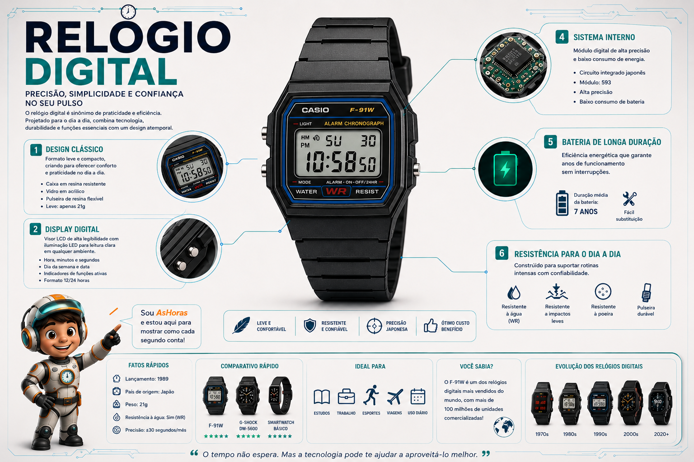

Relógio Digital: o visor numérico que marcou uma geração
Sem ponteiros, sem engrenagens à vista — só números nítidos em um visor de cristal líquido. Simples, resistente e barato, o relógio digital virou ícone pop dos anos 80 e continua firme no pulso de milhões de pessoas.
O que é um relógio digital?
O relógio digital usa a mesma base do quartzo — um cristal que vibra em frequência constante — mas, em vez de mover ponteiros, envia o resultado direto para um visor de cristal líquido (LCD), que exibe as horas em números. Essa simplicidade eletrônica é o que torna o relógio digital tão resistente a quedas, água e uso pesado, além de permitir funções extras como cronômetro, alarme e, nos modelos mais icônicos, até calculadora embutida.
Tipos de relógio digital
Do quadradinho minimalista ao modelo à prova de tudo, o digital se adaptou a públicos bem diferentes.
Anatomia de um relógio digital
Cristal de quartzo
Vibra em frequência constante e gera o "pulso" de tempo do relógio.
Circuito integrado
Conta as vibrações do cristal e converte em horas, minutos e segundos.
Visor de cristal líquido
Recebe o sinal elétrico e forma os números que você vê no mostrador.
Botões de função
Permitem ajustar hora, ativar alarme, cronômetro e luz de fundo.
Bateria
Uma única pilha alimenta cristal, circuito e visor por anos.
Caixa resistente
Poucas peças móveis internas tornam o conjunto robusto a quedas e água.
Precisão e desempenho
Como escolher um relógio digital
Prós e contras
Vantagens
- Muito resistente a quedas, água e uso pesado
- Leitura da hora clara e direta, sem interpretar ponteiros
- Preço acessível e bateria de longa duração
Desvantagens
- Visual considerado menos "elegante" em ocasiões formais
- Visor LCD pode ficar difícil de ler sob luz direta do sol
- Menor valor de coleção que peças mecânicas
O Casio F-91W, lançado em 1989, é um dos relógios digitais mais vendidos da história e segue em produção até hoje, praticamente sem mudanças no design. Nos anos 80, os modelos com calculadora embutida — como o Casio Databank — foram febre entre estudantes.
Infográfico: o relógio digital por dentro

Linha do tempo do relógio digital
Nasce o projeto Pulsar
A Hamilton anuncia o "wrist computer", um relógio totalmente eletrônico, sem ponteiros nem peças móveis para exibir a hora.
Primeiro relógio digital
O Pulsar P1 chega às lojas com visor de LED e caixa de ouro 18k, tornando-se o primeiro relógio digital vendido ao público.
Chegada do LCD
O visor de cristal líquido substitui o LED, permitindo hora sempre visível na tela e bateria com muito mais autonomia.
Nasce o G-Shock
A Casio lança o DW-5000C, criado pelo engenheiro Kikuo Ibe, dando início à linha mais resistente da história dos digitais.
Chega o F-91W
A Casio lança o modelo que se tornaria um dos relógios mais vendidos da história, praticamente sem mudanças no design até hoje.
Retrô e conectado
O visual digital clássico segue vivo lado a lado com híbridos que somam display digital, sensores e conectividade.
Peso no pulso por tipo de relógio
Perguntas frequentes
Relógio digital resiste a impactos e água no dia a dia?
No geral, sim. Poucas peças móveis internas tornam o relógio naturalmente resistente a quedas, e a resistência à água varia conforme a classificação (WR) informada pelo fabricante.
Por que o mostrador LCD pode ficar difícil de ler no sol?
O cristal líquido depende de luz refletida para formar os números; sob luz direta muito forte, o contraste pode cair, dificultando a leitura.
Vale a pena optar por um modelo com iluminação de fundo?
Sim, para quem costuma consultar as horas em ambientes escuros, a luz de fundo (LED ou eletroluminescente) facilita bastante a leitura.
Relógios digitais clássicos como o F-91W ainda são fabricados?
Sim, o modelo segue em produção praticamente sem alterações desde 1989, mantendo o mesmo apelo de simplicidade e baixo custo.
Referências e leituras complementares
Este conteúdo foi baseado em fontes públicas sobre a história e o funcionamento dos relógios digitais. Para se aprofundar, vale a leitura: